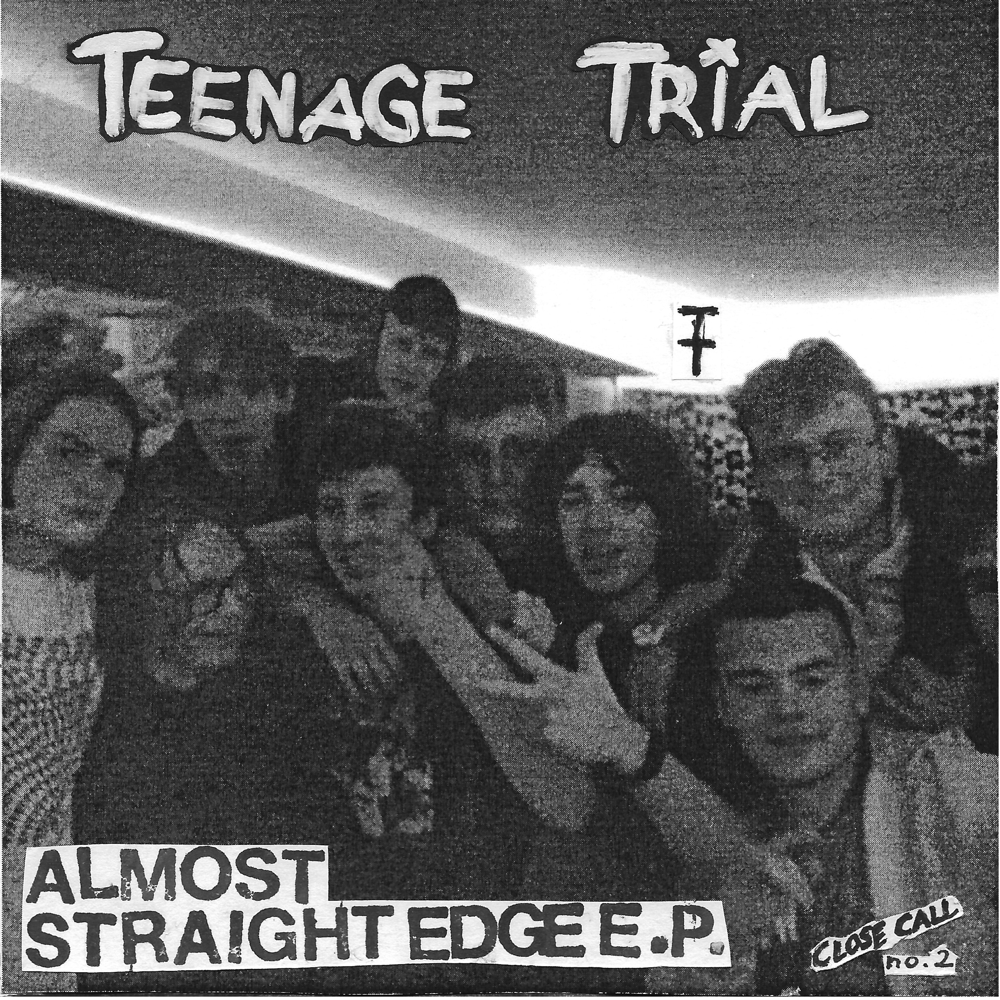
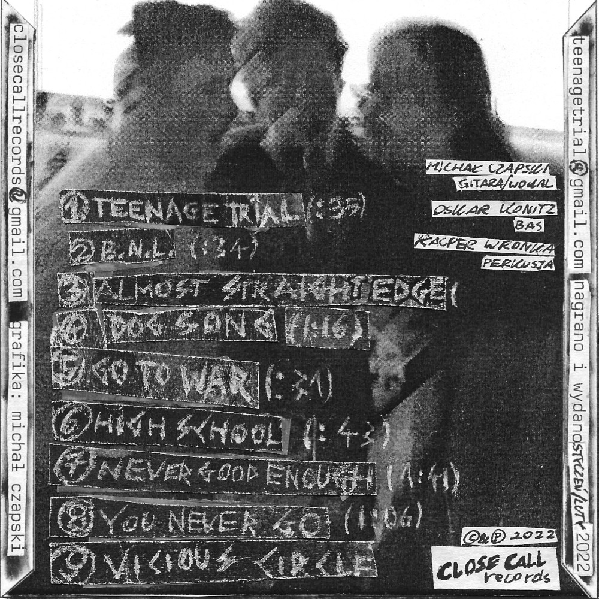

CD / 9 Utworów + Plakat
Tutaj słychać prawdziwy "teenage angst", fani ekstremalnego lo-fi 80s hardcora się w EPce TT odnajdą. Nagrane niestarannie, w pośpiechu, DIY.
Nagrano w Piwnicy TT - styczeń/luty 2022
9. utwór - koncert 5 luty @ Cockney Pub
1. Teenage Trial
2. B.N.L.
3. Almost Straight Edge
4. Dog Song
5. Go To War
6. High School
7. Never Good Enough
8. You Never Go
9. Vicious Circle (Live)
Michał Czapski - gitara, wokal
Kacper Wronka - perkusja
Oskar Konitz - bas
Michał Czapski - grafika/wydanie
Wydano - Luty 2022
EPka już niedostępna na CD.
Posłuchaj na Bandcamp.
Teenage Trial / Close Call Records © 2022